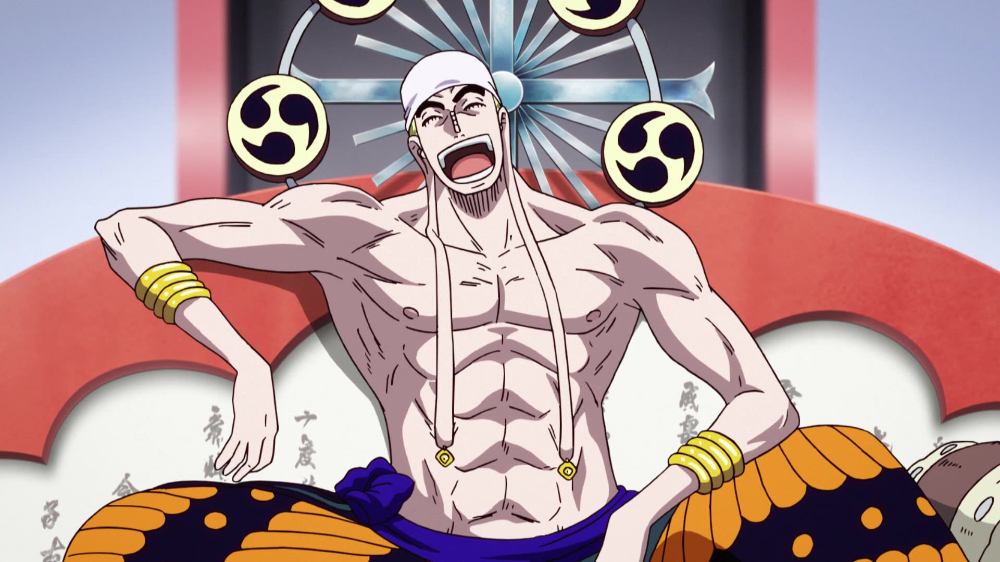

Al ser una serie tan larga y con tantos elementos se puede contar su historia de distintas formas, ya sea en orden cronológico o en el orden del que el autor lo presentó. En este caso se resumirá la historia en la forma que el autor la quiso. One Piece se desarrolla en un mundo donde existen dos grandes océanos que casi cubren toda la superficie, por lo tanto la gente siempre viven en el mar. En el pasado existió un hombre, que fue considerado el Rey de los Piratas y dejó un gran tesoro escondido llamado el One Piece. Desde entonces todos los jóvenes aventureros se lanzan a la mar para poder conseguirlo y convertirse en los piratas más importantes.
Mar de supervivencia.
Saga del East Blue.

La serie comienza con la ejecución de Gold Roger, un hombre conocido como El Rey de los Piratas. Justo antes de su muerte, Roger hace mención de su gran tesoro legendario, el One Piece y que puede ser tomado por quien lo encuentre. Esto marca el inicio de una era conocida como la Gran Era Pirata. Como resultado, un sin número de piratas zarparon hacia el Grand Line con el objetivo de encontrarlo. Más de veinte años después de la muerte de Roger, el One Piece sigue sin ser encontrado. Un joven llamado Monkey D. Luffy, quien comió la Fruta Goma Goma, la cual le otorgó elasticidad, inspirado por la admiración que desde su infancia le tiene al poderoso pirata Shanks el Pelirrojo, comienza su aventura desde su hogar en el mar East Blue para encontrar el One Piece y autoproclamarse a él mismo como el nuevo Rey de los Piratas. Con el fin de crear y convertirse en el capitán de una tripulación propia, el muchacho funda los Piratas de Sombrero de Paja, siendo el espadachín Roronoa Zoro el primer nakamaNota 1que Luffy rescata y alista, lo que permite que ambos continúen emprendiendo su viaje hacia el tesoro. Poco después, Nami, una navegante ladrona, Usopp, un francotirador mentiroso,y Sanji, un cocinero enamoradizo de las mujeres se les unen en sus travesías,además de conseguir un barco llamado el Going Merry. En sus viajes, la tripulación se enfrenta a varios enemigos poderosos como Buggy el Payaso, el Capitán Kuro, Don Krieg.16 o el hombre-pez Arlong. El grupo logra arribar a Loguetown, un pueblo porteño, y Luffy conoce a un oficial de la Marina llamado Smoker, quien posee la habilidad de transformarse en humo y pretende capturarlo, pero es detenido por un hombre llamado Dragon.
Saga de Arabasta.
Después de llegar finalmente a la Grand Line, el grupo conoce en la entrada a Crocus, el guardián del faro y cuidador de Laboon, una gigantesca ballena. Él les da información para navegar por el mar y sobre Laugh Tale, la isla donde Roger dejó el One Piece. También conocen a Nefertari Vivi, una princesa que desea salvar a su país, el Reino de Arabasta, de manos de una peligrosa organización criminal llamada Baroque Works, viajando ella y su pato mascota Karoo con la tripulación durante un tiempo. Durante su trayecto hacia Arabasta, los piratas llegan a Little Garden, donde entablan amistad con dos gigantes del lugar, y se enfrentan a varios miembros de Baroque Works. Después de que Nami caiga enferma por su paso por el lugar, llegan a la isla de Drum en busca de ayuda médica, donde los de Sombrero de Paja invitan a un reno antropomórfico y médico llamado Tony Tony Chopper a unirseles al grupo, y este acepta. Una vez que la tripulación llega hasta de Arabasta, comienzan una serie de batallas contra los Baroque Works y su líder, el Guerrero del Mar Sir Crocodile. Luffy finalmente derrota a Crocodile y libera al reino, posteriormente teniendo la tripulación que despedirse de Vivi. Inmediatamente después, Nico Robin, una arqueóloga que antes pertenecía a Baroque Works, se une a la tripulación.
Saga de la Isla del Cielo.
Poco después, queriendo buscar una ruta a la legendaria "Isla del Cielo", llegan a Jaya, una isla, dónde conocen a «Barbanegra», alias de Marshal D. Teach, quien también aspira a convertirse en el Rey de los Piratas. La tripulación viaja hasta una isla del cielo llamada Skypiea, donde sin querer, se unen a una guerra insipiente entre dos tribus habitantes de dicho lugar, lo que los lleva a enfrentarse al líder de la isla, Enel, quién posee el poder de crear relámpagos y electricidad. Luffy logra derrotarlo, y con ello, terminar la guerra. También al abandonar la isla obtienen gran cantidad de oro, el cual deciden usarlo para reparar el Going Merry, y de paso encontrar un carpintero para arreglar futuros daños en el barco.
Saga de Water 7.
Tras un encuentro con los Piratas de Foxy, quienes les retan a una serie de juegos pirata, un almirante de la Marina llamado Aokiji, se les aparece y les dice que Robin ha estado involucrada en la búsqueda de unas piedras arcaicas llamadas «poneglyphs», las cuales fueron creadas por una antigua civilización en las que se encuentra encriptada la historia que el Gobierno Mundial borró del mundo hace ochocientos años. Tras ese encuentro, los de Sombrero de Paja llegan a Water 7, donde los carpinteros del lugar les informan que el Going Merry está demasiado dañado y no es posible repararlo, lo que causa que Usopp renuncie a seguir en la tripulación a la tripulación. Después tienen un encuentro con un cyborg llamado Franky, el líder de la Familia Franky, así como el pupilo de Tom, quien construyó el barco del Rey de los Piratas. El CP9, una agencia de inteligencia del Gobierno Mundial, captura a Robin y a Franky, con el fin de que ellos les revelen información respecto al uso de los poneglyphs y las armas ancestrales que estas puedan contener, por lo que sus amigos van en su rescate a Enies Lobby, donde los de Sombrero de Paja declaran la guerra al propio Gobierno, lo que resulta en una serie de peleas entre los piratas y el CP9. Al terminar la batalla final contra los agentes, la tripulación logra rescatar a Robin. Asimismo, Franky construye una nueva embarcación llamada el Thousand Sunny, con el fin de reemplazar al perdido Going Merry, y con ello él se une a la tripulación como su carpintero. Tras ello, Usopp pide disculpas a sus compañeros por marcharse, volviendo de nuevo con ellos.
Saga de la Guerra en la Cumbre.
Navegando en su nuevo barco, los piratas se encuentran con un barco fantasma, donde conocen a Brook, un músico esquelético que fue revivido con una fruta del diablo, y además, a quien Gecko Moria, otro miembro de los Siete Guerreros del Mar y capitán del gigantesco barco pirata Thriller Bark, le robó su sombra. Una vez que los piratas derrotan a Moria, Brook se les une. Después de llegar al Archipiélago Sabaody, la tripulación se prepara para ingresar al Nuevo Mundo, la segunda mitad del Grand Line. Mientras están ahí, ellos se hacen amigos de Silvers Rayleigh, el antiguo primer oficial de la tripulación de los Piratas de Roger, y le piden que recubra su barco para que puedan atravesar la Red Line por medio del subsuelo oceánico. Ahí, los de Sombrero de Paja se ven involucrados en una revuelta causada por un Noble Mundial; para terminar con el alboroto, uno de los Siete Guerreros del Mar, Bartholomew Kuma, los separa enviándolos a diferentes lugares mediante sus poderes.Luffy llega a una isla afrodisíaca llamada Amazon Lily, donde únicamente la habitan mujeres, y gobernada por Boa Hancock, una de los Siete Guerreros del Mar. Una vez que el muchacho se entera de que Portgas D. Ace, su hermano adoptivo, se encuentra prisionero en Impel Down, Luffy emprende un viaje para liberarlo, logrando de paso soltar a otros prisioneros, como al hombre-pez y miembro de los Guerreros del Mar Jinbe, a quien encerraron tras negarse a colaborar con el Gobierno, y a viejos enemigos. Sin embargo, el protagonista se da cuenta de que su hermano ahora está en Marineford para ser ejecutado por soldados de la Marina. En cuanto él llega, una guerra estalla entre las fuerzas de la Marina, y la tripulación del renombrado Edward Newgate, mundialmente conocido como «Barbablanca». En medio del caos y del clímax de la batalla, Ace y Barbablanca son asesinados. Luffy lamenta la pérdida de Ace, al igual que la pérdida que vivió de pequeño con su otro hermano adoptivo, Sabo. Con ayuda de Jinbe y a petición de Rayleigh, Luffy decide enviar a sus amigos el mensaje de esperar dos años hasta volver a encontrarse, pasando todos ellos por un intenso régimen de entrenamiento, estando algunos de ellos bajo la supervisión de personajes importantes.